import numpy as np
from scipy import stats
import matplotlib.pyplot as plt
plt.style.use('assets/book.mplstyle')
rng = np.random.default_rng(42)
# Observed data: 7 heads in 10 flips
n_flips = 10
n_heads = 71 Bayesian Thinking and Why PyMC
1.1 Why Bayesian?
If you took a statistics course in college — even a good one — chances are you learned the frequentist approach to inference. You computed p-values, constructed confidence intervals, and ran hypothesis tests. These tools work, and they’ve powered decades of science and industry. But they answer a question that isn’t always the one you’re asking.
The frequentist asks: “If I repeated this experiment many times, what would I see?” The Bayesian asks: “Given the data I actually observed, what should I believe?”
That’s the practical divide. It’s not a philosophical debate about the nature of probability (though you can find plenty of those online). It’s about which question is more useful for the problem in front of you.
The case for Bayesian thinking
As Chris Fonnesbeck puts it, “statistical literacy is about making inferences from incomplete or error-contaminated data.” That is the real job description — not computing test statistics, but reasoning under uncertainty. The Bayesian framework makes this explicit: every conclusion is a probability statement conditioned on what you observed.
Thomas Wiecki takes this further: “Everyone is already a modeler; formalize it and add uncertainty.” When a product manager eyeballs a trend line and says “sales are up,” they are fitting an implicit model in their head — with no error bars. Bayesian statistics simply writes that model down and adds the uncertainty that the mental model leaves out.
1.1.1 A coin-flip example
Suppose you flip a coin 10 times and get 7 heads. Is the coin fair?
A frequentist would set up a null hypothesis (\(H_0\): the coin is fair, \(p = 0.5\)) and ask: “If the coin were fair, how surprising is it to see 7 or more heads in 10 flips?” That gives you a p-value — the probability of the data under the null.
A Bayesian asks a different question: “Given that I saw 7 heads in 10 flips, what’s the probability that the coin’s bias \(\theta\) is greater than 0.5?” You get a full distribution over possible values of \(\theta\), not just a binary reject/don’t-reject answer.
Let’s see both approaches in code.
The frequentist approach: compute a p-value using a binomial test.
# Two-sided binomial test: is p different from 0.5?
result = stats.binomtest(k=n_heads, n=n_flips, p=0.5)
print(f"P-value (two-sided): {result.pvalue:.4f}")
print(f"95% confidence interval: {result.proportion_ci(confidence_level=0.95)}")P-value (two-sided): 0.3438
95% confidence interval: ConfidenceInterval(low=0.3475471499399921, high=0.9332604888222655)The p-value tells you: “If the coin were perfectly fair, there’s about a 34% chance of seeing a result this extreme or more extreme.” Since that’s well above 0.05, you wouldn’t reject the null. The confidence interval gives a range — but its interpretation requires imagining infinite repetitions of the experiment.
The Bayesian approach: compute a posterior distribution using Bayes’ theorem.
# Beta-Binomial conjugate model
# Prior: Beta(1, 1) = Uniform(0, 1) -- no prior preference
alpha_prior = 1
beta_prior = 1
# Posterior: Beta(alpha_prior + heads, beta_prior + tails)
alpha_post = alpha_prior + n_heads
beta_post = beta_prior + (n_flips - n_heads)
posterior = stats.beta(alpha_post, beta_post)
# What's the probability that theta > 0.5?
prob_biased = 1 - posterior.cdf(0.5)
print(f"Posterior: Beta({alpha_post}, {beta_post})")
print(f"P(θ > 0.5 | data) = {prob_biased:.4f}")
print(f"95% credible interval: ({posterior.ppf(0.025):.3f}, {posterior.ppf(0.975):.3f})")Posterior: Beta(8, 4)
P(θ > 0.5 | data) = 0.8867
95% credible interval: (0.390, 0.891)The Bayesian answer is direct: “There’s about a 73% probability that the coin is biased toward heads.” You get a full distribution over \(\theta\) that you can slice any way you want.
# Visualize the posterior distribution
theta = np.linspace(0, 1, 200)
fig, ax = plt.subplots(figsize=(8, 4))
ax.plot(theta, posterior.pdf(theta), linewidth=2, label="Posterior")
ax.axvline(x=0.5, color="gray", linestyle="--", alpha=0.7, label="Fair coin")
ax.fill_between(
theta,
posterior.pdf(theta),
where=(theta >= posterior.ppf(0.025)) & (theta <= posterior.ppf(0.975)),
alpha=0.3,
label="95% credible interval",
)
ax.set_xlabel("θ (probability of heads)")
ax.set_ylabel("Density")
ax.set_title("Posterior distribution after 7 heads in 10 flips")
ax.legend()
plt.tight_layout()
plt.show()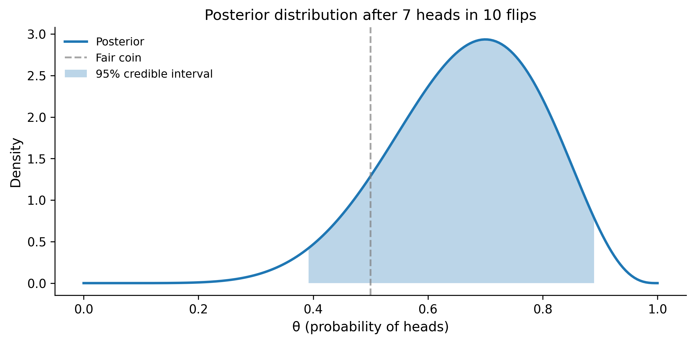
The plot shows the posterior — a complete picture of your uncertainty about the coin’s bias. The peak is near 0.7 (our observed proportion), but there’s substantial spread because 10 flips isn’t much data. This is what Bayesian inference gives you: not a single number and a binary decision, but a full accounting of uncertainty.
1.1.2 Why this matters in practice
The Bayesian approach shines when:
- You have prior knowledge. A drug company testing a new formulation doesn’t start from total ignorance — they know the previous version’s efficacy. Bayesian methods let you incorporate that.
- You want direct probability statements. “There’s a 95% chance the parameter is in this interval” is the Bayesian interpretation. Frequentist confidence intervals don’t mean that, even though everyone interprets them that way.
- You have small samples. With little data, the prior provides regularization. Without it, your estimates are noisy and unreliable.
- You need to make decisions. Bayesian posteriors plug directly into decision theory — you can compute the expected cost of each action and pick the best one.
1.2 Bayes’ Theorem Refresher
Everything in Bayesian statistics flows from a single equation:
\[ P(\theta \mid \text{data}) = \frac{P(\text{data} \mid \theta) \times P(\theta)}{P(\text{data})} \]
Or in proportional form (dropping the denominator, which is just a normalizing constant):
\[ P(\theta \mid \text{data}) \propto P(\text{data} \mid \theta) \times P(\theta) \]
Let’s name the pieces:
| Term | Name | What it means |
|---|---|---|
| \(P(\theta)\) | Prior | What you believe about \(\theta\) before seeing data |
| \(P(\text{data} \mid \theta)\) | Likelihood | How probable the observed data is, given a specific \(\theta\) |
| \(P(\theta \mid \text{data})\) | Posterior | What you believe about \(\theta\) after seeing data |
| \(P(\text{data})\) | Evidence (or marginal likelihood) | A normalizing constant so the posterior integrates to 1 |
The logic is elegant: you start with beliefs (prior), update them with evidence (likelihood), and arrive at revised beliefs (posterior). Every time you get new data, your posterior becomes your new prior, and the cycle continues.
1.2.1 Worked example: the beta-binomial
Let’s walk through Bayes’ theorem with the coin-flip example, computing everything from scratch so you can see how the pieces connect.
Setup: You flip a coin \(n = 20\) times and observe \(y = 14\) heads. You want to estimate \(\theta\), the probability of heads.
Step 1: Choose a prior. We’ll use a Beta(2, 2) prior — this says we think the coin is roughly fair, but we’re not very sure. It’s a gentle hill centered at 0.5.
# Prior: Beta(2, 2)
alpha_prior = 2
beta_prior = 2
prior = stats.beta(alpha_prior, beta_prior)
# Data
n = 20
y = 14
theta = np.linspace(0, 1, 300)
fig, ax = plt.subplots(figsize=(8, 4))
ax.plot(theta, prior.pdf(theta), linewidth=2, label="Prior: Beta(2, 2)")
ax.set_xlabel("θ")
ax.set_ylabel("Density")
ax.set_title("Prior distribution")
ax.legend()
plt.tight_layout()
plt.show()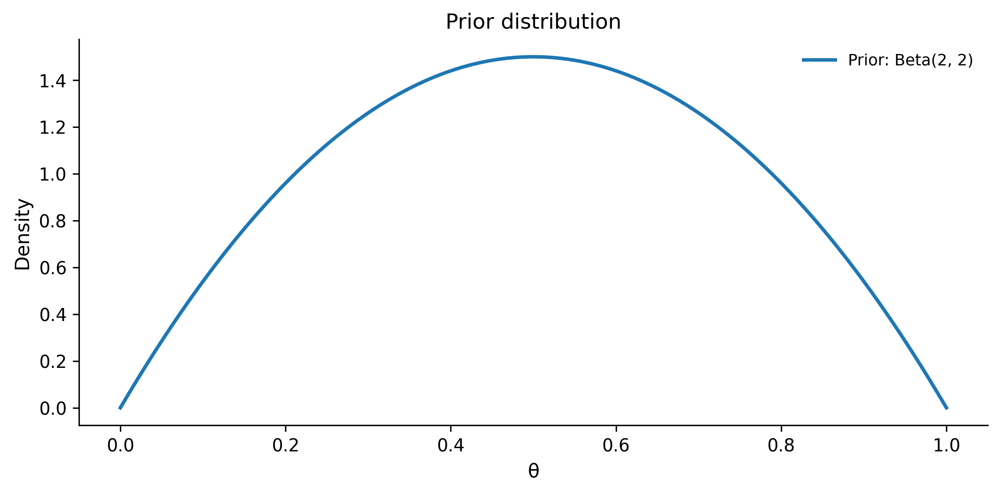
Step 2: Write down the likelihood. The data are binomial — \(y\) successes in \(n\) trials. The likelihood function is:
\[ P(y \mid \theta) = \binom{n}{y} \theta^y (1 - \theta)^{n - y} \]
For each possible value of \(\theta\), this tells you how likely you’d be to see exactly 14 heads in 20 flips.
# Compute likelihood for each theta value
likelihood = stats.binom.pmf(k=y, n=n, p=theta)
fig, ax = plt.subplots(figsize=(8, 4))
ax.plot(theta, likelihood, linewidth=2, color="orange", label="Likelihood")
ax.set_xlabel("θ")
ax.set_ylabel("P(data | θ)")
ax.set_title("Likelihood function: P(14 heads in 20 flips | θ)")
ax.legend()
plt.tight_layout()
plt.show()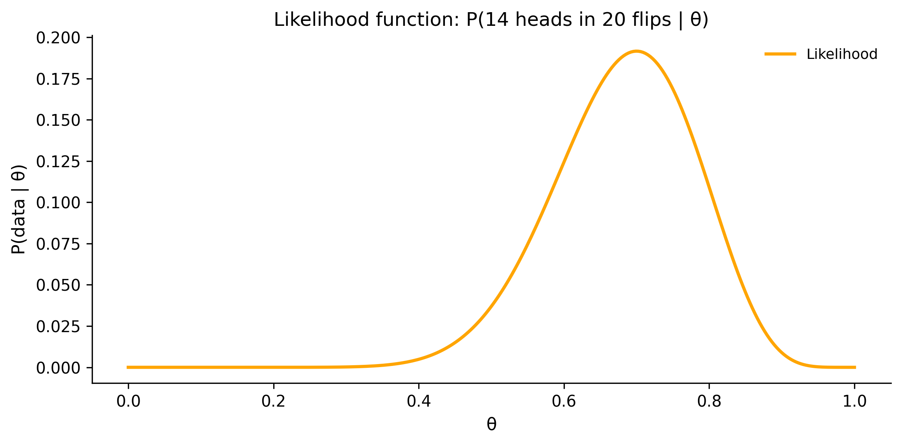
The likelihood peaks at \(\theta = 14/20 = 0.7\) — the maximum likelihood estimate. But it doesn’t tell you what \(\theta\) actually is; it tells you how well each possible \(\theta\) explains your data.
Step 3: Compute the posterior. For the beta-binomial model, the posterior has a closed-form solution:
\[ \text{Posterior} = \text{Beta}(\alpha_{\text{prior}} + y, \; \beta_{\text{prior}} + n - y) \]
# Posterior: Beta(alpha + y, beta + n - y)
alpha_post = alpha_prior + y
beta_post = beta_prior + (n - y)
posterior = stats.beta(alpha_post, beta_post)
print(f"Prior: Beta({alpha_prior}, {beta_prior})")
print(f"Data: {y} heads in {n} flips")
print(f"Posterior: Beta({alpha_post}, {beta_post})")
print(f"Posterior mean: {posterior.mean():.3f}")
print(f"Posterior mode: {(alpha_post - 1) / (alpha_post + beta_post - 2):.3f}")Prior: Beta(2, 2)
Data: 14 heads in 20 flips
Posterior: Beta(16, 8)
Posterior mean: 0.667
Posterior mode: 0.682Step 4: Visualize the update.
fig, ax = plt.subplots(figsize=(8, 4))
# Normalize likelihood for visual comparison
likelihood_norm = likelihood / likelihood.max() * posterior.pdf(theta).max()
ax.plot(theta, prior.pdf(theta), linewidth=2, label="Prior: Beta(2, 2)")
ax.plot(
theta,
likelihood_norm,
linewidth=2,
linestyle="--",
color="orange",
label="Likelihood (scaled)",
)
ax.plot(
theta,
posterior.pdf(theta),
linewidth=2,
color="green",
label=f"Posterior: Beta({alpha_post}, {beta_post})",
)
ax.set_xlabel("θ")
ax.set_ylabel("Density")
ax.set_title("Bayesian update: prior × likelihood → posterior")
ax.legend()
plt.tight_layout()
plt.show()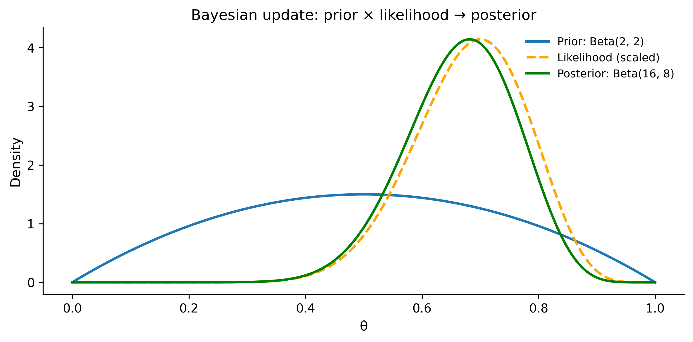
Notice how the posterior is a compromise between the prior and the likelihood. The prior gently pulls toward 0.5; the data pulls toward 0.7. The posterior lands in between, closer to the data because we have a fairly weak prior and a decent amount of data.
This is the fundamental mechanism of Bayesian learning: data overwhelms weak priors, but strong priors resist small amounts of data. As you collect more data, the likelihood dominates and the prior becomes irrelevant.
1.3 Priors: What You Know Before Seeing Data
Choosing a prior is the part of Bayesian analysis that makes people nervous. “Isn’t it subjective?” Yes — but so is choosing which variables to include in your model, which observations to exclude, and which likelihood to use. The prior just makes your assumptions explicit rather than hidden.
On subjectivity in statistics
Chris Fonnesbeck makes a pointed observation: “Subjective choices exist in all statistics — choosing \(\alpha = 0.05\) is arbitrary; just be honest about it.” The frequentist who sets a significance threshold is making a subjective decision. The analyst who chooses which covariates to include is making a subjective decision. The Bayesian prior is no more subjective — it is just more visible. Honesty about your assumptions, rather than burying them in defaults, is a feature.
1.3.1 Types of priors
Flat (uniform) priors assign equal probability to all values. For a parameter between 0 and 1, that’s Beta(1, 1) or equivalently Uniform(0, 1). People sometimes call these “non-informative” or “objective,” but that’s misleading — a uniform prior on \(\theta\) is not uniform on \(\log(\theta)\) or \(\theta^2\). The choice of parameterization imposes a hidden structure.
Weakly informative priors rule out nonsense values without strongly favoring any particular value. For a regression coefficient that you expect to be moderate, Normal(0, 10) says “probably between -20 and 20, but I’m not sure where.” This is the modern default approach recommended by the Stan and PyMC communities.
Informative priors encode genuine knowledge. If you’re estimating human height in centimeters, Normal(170, 10) says “most adults are between 150 and 190 cm.” This is not cheating — it’s using knowledge you actually have.
1.3.2 Priors in code
fig, axes = plt.subplots(1, 3, figsize=(12, 4))
theta = np.linspace(-30, 30, 500)
theta_01 = np.linspace(0.001, 0.999, 500)
# Flat prior: Uniform(0, 1)
axes[0].plot(
theta_01,
stats.uniform.pdf(theta_01),
linewidth=2,
)
axes[0].set_title("Flat: Uniform(0, 1)")
axes[0].set_xlabel("θ")
axes[0].set_ylabel("Density")
axes[0].set_ylim(0, 2)
# Weakly informative: Normal(0, 10)
axes[1].plot(
theta,
stats.norm.pdf(theta, loc=0, scale=10),
linewidth=2,
color="orange",
)
axes[1].set_title("Weakly informative: Normal(0, 10)")
axes[1].set_xlabel("θ")
# Informative: Normal(170, 10) for height
theta_height = np.linspace(130, 210, 500)
axes[2].plot(
theta_height,
stats.norm.pdf(theta_height, loc=170, scale=10),
linewidth=2,
color="green",
)
axes[2].set_title("Informative: Normal(170, 10)")
axes[2].set_xlabel("θ (cm)")
plt.tight_layout()
plt.show()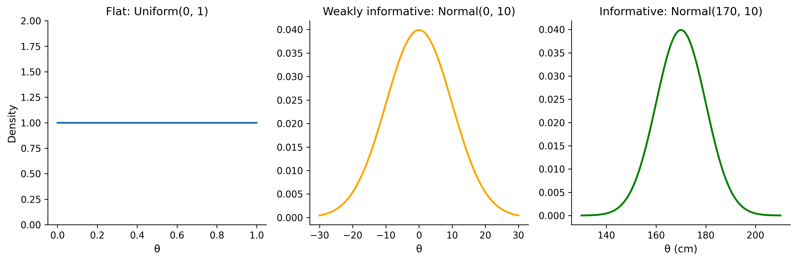
1.3.3 The practical approach
For most problems, use weakly informative priors. They provide three benefits:
- Regularization. They prevent your model from fitting noise, especially with small samples.
- Computational stability. Flat priors on unbounded parameters can cause sampling problems.
- Transparency. They document your assumptions explicitly in the model code.
A good rule of thumb from Andrew Gelman: set your prior so that it rules out values you’d consider absurd, but doesn’t strongly favor any particular value within the plausible range. If you’re estimating a human’s height and your prior puts meaningful probability on 500 cm, something is wrong.
# Demonstrating prior sensitivity with the coin example
fig, ax = plt.subplots(figsize=(8, 4))
# Same data: 7 heads in 10 flips
n_flips = 10
n_heads = 7
# Three different priors
priors = [
(1, 1, "Flat: Beta(1,1)"),
(2, 2, "Weakly informative: Beta(2,2)"),
(10, 10, "Strong prior toward fair: Beta(10,10)"),
]
theta = np.linspace(0, 1, 300)
for alpha_p, beta_p, label in priors:
post = stats.beta(alpha_p + n_heads, beta_p + n_flips - n_heads)
ax.plot(theta, post.pdf(theta), linewidth=2, label=label)
ax.axvline(x=0.7, color="gray", linestyle=":", alpha=0.7, label="MLE = 0.7")
ax.set_xlabel("θ")
ax.set_ylabel("Posterior density")
ax.set_title("Effect of prior choice on posterior (7/10 heads)")
ax.legend()
plt.tight_layout()
plt.show()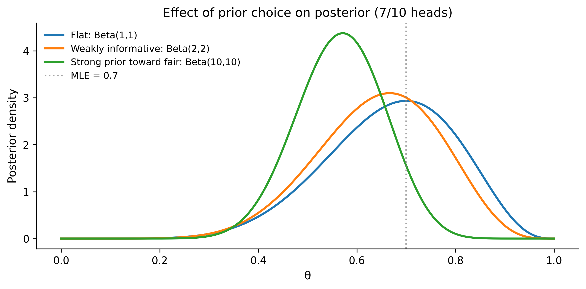
With a flat prior, the posterior is dominated by the data and peaks at 0.7. With a strong prior toward fairness, the posterior is pulled toward 0.5. With a weakly informative prior, you get a compromise. As you collect more data, all three posteriors converge — the prior washes out.
1.4 The Likelihood: Connecting Model to Data
The likelihood function is the bridge between your model and your observations. It answers: “If the parameter were exactly this value, how probable would my observed data be?”
Formally, the likelihood is \(P(\text{data} \mid \theta)\) — the same function you use in frequentist statistics (maximum likelihood estimation maximizes exactly this). The difference is that in Bayesian inference, you don’t just find the peak; you use the entire shape of the likelihood to update your beliefs.
1.4.1 Common likelihoods
The choice of likelihood depends on the type of data you’re modeling:
| Data type | Likelihood | Example |
|---|---|---|
| Continuous, symmetric | Normal (Gaussian) | Heights, measurement error |
| Binary outcomes | Bernoulli / Binomial | Click/no-click, pass/fail |
| Count data | Poisson | Number of emails per hour |
| Positive continuous | Exponential / Gamma | Waiting times, income |
| Bounded continuous | Beta | Proportions, rates |
1.4.2 Computing the log-likelihood
In practice, we always work with the log-likelihood rather than the likelihood itself. The reason is numerical stability: likelihoods involve products of many small probabilities, which quickly underflow to zero. Taking logs turns products into sums.
# Example: Normal likelihood for height data
# Suppose we measured 5 people's heights (in cm)
heights = np.array([168, 172, 175, 171, 169])
# For a given mu and sigma, what's the log-likelihood of these data?
def log_likelihood_normal(data, mu, sigma):
"""Compute log-likelihood of data under Normal(mu, sigma)."""
return stats.norm.logpdf(data, loc=mu, scale=sigma).sum()
# Evaluate at different values of mu (fixing sigma = 3)
mu_values = np.linspace(160, 185, 200)
sigma_fixed = 3.0
ll_values = np.array([
log_likelihood_normal(heights, mu=mu, sigma=sigma_fixed)
for mu in mu_values
])
fig, ax = plt.subplots(figsize=(8, 4))
ax.plot(mu_values, ll_values, linewidth=2)
ax.axvline(
x=heights.mean(),
color="red",
linestyle="--",
label=f"MLE: μ = {heights.mean():.1f}",
)
ax.set_xlabel("μ (mean height)")
ax.set_ylabel("Log-likelihood")
ax.set_title("Log-likelihood as a function of μ")
ax.legend()
plt.tight_layout()
plt.show()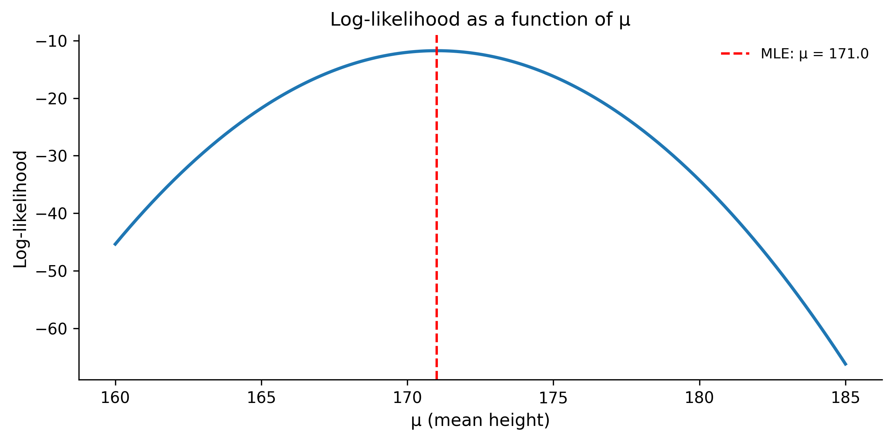
The log-likelihood peaks at the sample mean (171 cm) — that’s the maximum likelihood estimate. But the curve’s width tells you about uncertainty. A narrow peak means the data strongly constrain the parameter; a wide peak means there’s more ambiguity.
1.4.3 Why the likelihood alone isn’t enough
The likelihood tells you which parameter values are consistent with the data, but it doesn’t tell you which values are plausible a priori. If you measured 5 people and got a mean of 171, the likelihood at \(\mu = 171\) is maximized — but the likelihood at \(\mu = 170.99\) is almost as high. Without a prior, you have no way to say “heights of 300 cm are implausible regardless of what the data say.”
This is why we multiply by the prior. The likelihood provides the evidence from data; the prior provides context from knowledge.
1.5 The Posterior: What You Believe After Seeing Data
The posterior distribution is the goal of Bayesian inference. It combines everything you knew before (the prior) with everything the data told you (the likelihood) into a single probability distribution over the parameter.
For our coin example, the posterior was Beta(8, 4) — a clean formula because we used a conjugate prior. But most real problems don’t have such tidy solutions.
1.5.1 The denominator problem
Look at Bayes’ theorem again:
\[ P(\theta \mid \text{data}) = \frac{P(\text{data} \mid \theta) \times P(\theta)}{P(\text{data})} \]
The denominator \(P(\text{data})\) is called the “evidence” or “marginal likelihood.” To compute it, you have to integrate over all possible values of \(\theta\):
\[ P(\text{data}) = \int P(\text{data} \mid \theta) \, P(\theta) \, d\theta \]
For a one-dimensional parameter, this integral might be tractable. But real models have tens, hundreds, or thousands of parameters. That integral becomes a high-dimensional monster that no analytical method or numerical quadrature can handle efficiently.
This is the fundamental computational challenge of Bayesian statistics, and it’s the reason PyMC exists.
1.6 Your First PyMC Model
Let’s rebuild our coin-flip analysis using PyMC. This is the same beta-binomial model we solved analytically, but now we let PyMC handle the posterior computation via MCMC.
import pymc as pm
import arviz as az# Data: 14 heads in 20 flips
n_flips = 20
n_heads = 14
with pm.Model() as coin_model:
# Prior: theta ~ Beta(2, 2)
theta = pm.Beta("theta", alpha=2, beta=2)
# Likelihood: data ~ Binomial(n, theta)
y = pm.Binomial("y", n=n_flips, p=theta, observed=n_heads)
# Sample from the posterior
trace = pm.sample(
draws=2000,
tune=1000,
random_seed=42,
progressbar=True,
)Let’s break down every line:
pm.Model() as coin_model— Creates a model context. Everything indented inside this block becomes part of the model.pm.Beta("theta", alpha=2, beta=2)— Declares a random variable named “theta” with a Beta(2, 2) prior. This is our parameter of interest.pm.Binomial("y", n=n_flips, p=theta, observed=n_heads)— Declares the likelihood. Theobserved=n_headsargument tells PyMC that this variable is observed (not latent), and its value is 14. This is how data enters the model.pm.sample(draws=2000, tune=1000, ...)— Runs the MCMC sampler. It draws 2000 posterior samples after a 1000-sample “tuning” phase (where the sampler adapts its step size). The result is stored intrace.
Now let’s look at the results:
# Summary statistics
az.summary(trace, var_names=["theta"], hdi_prob=0.95)| mean | sd | hdi_2.5% | hdi_97.5% | mcse_mean | mcse_sd | ess_bulk | ess_tail | r_hat | |
|---|---|---|---|---|---|---|---|---|---|
| theta | 0.666 | 0.094 | 0.476 | 0.841 | 0.002 | 0.001 | 3439.0 | 4964.0 | 1.0 |
The summary shows the posterior mean, standard deviation, and the 95% Highest Density Interval (HDI) — the narrowest interval containing 95% of the posterior mass.
# Trace plot: visual diagnostic
az.plot_trace(trace, var_names=["theta"])
plt.tight_layout()
plt.show()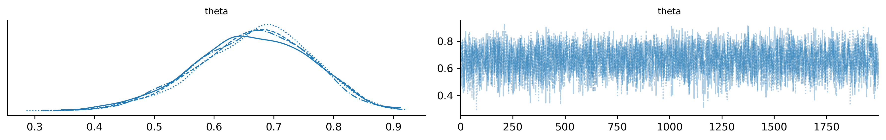
The trace plot shows two things side by side. On the left: the posterior density (should look like a smooth hill). On the right: the trace of MCMC samples over time (should look like a “fuzzy caterpillar” with no trends or stuck regions). If the trace looks bad — trending, stuck, or with sharp jumps — the sampler hasn’t converged and you can’t trust the results.
# Compare PyMC result with analytical solution
fig, ax = plt.subplots(figsize=(8, 4))
# Analytical posterior
analytical_post = stats.beta(2 + n_heads, 2 + n_flips - n_heads)
theta_grid = np.linspace(0, 1, 200)
ax.plot(
theta_grid,
analytical_post.pdf(theta_grid),
linewidth=2,
color="red",
label=f"Analytical: Beta({2 + n_heads}, {2 + n_flips - n_heads})",
)
# PyMC posterior samples
posterior_samples = trace.posterior["theta"].values.flatten()
ax.hist(
posterior_samples,
bins=40,
density=True,
alpha=0.5,
label="PyMC samples",
)
ax.set_xlabel("θ")
ax.set_ylabel("Density")
ax.set_title("PyMC posterior vs analytical solution")
ax.legend()
plt.tight_layout()
plt.show()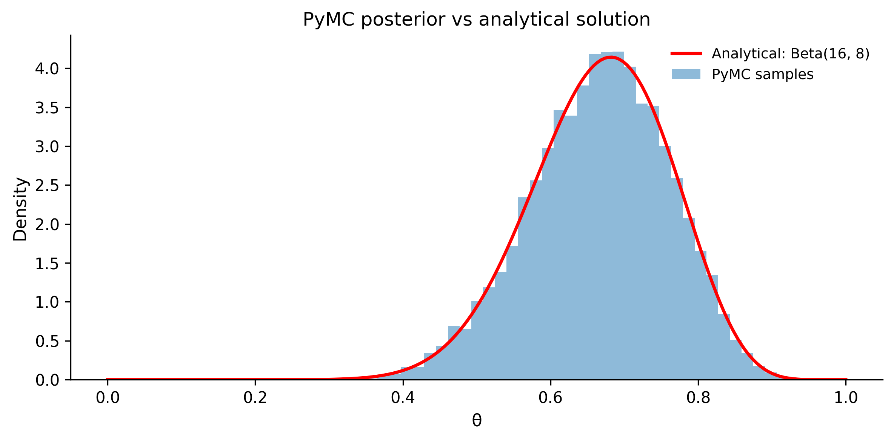
They match. For this simple model, PyMC gives the same answer as the analytical formula. The power of PyMC is that it gives you this same machinery for models where no analytical solution exists — multilevel models, mixture models, Gaussian processes, and anything else you can express as a probabilistic program.
1.7 Conjugacy vs Computation
In the previous sections, we used the beta-binomial model — a case where the posterior has a known closed form. This happens because the Beta prior is conjugate to the Binomial likelihood, meaning the posterior is in the same family as the prior (just with updated parameters).
1.7.1 Common conjugate pairs
| Likelihood | Conjugate prior | Posterior |
|---|---|---|
| Binomial | Beta | Beta |
| Normal (known variance) | Normal | Normal |
| Poisson | Gamma | Gamma |
| Normal (known mean) | Inverse-Gamma | Inverse-Gamma |
| Multinomial | Dirichlet | Dirichlet |
Conjugate models are convenient: you update the prior parameters with sufficient statistics from the data and you’re done. No sampling needed.
# Example: Poisson-Gamma conjugate pair
# Prior: rate ~ Gamma(alpha=2, beta=1)
# Data: observed counts [3, 5, 4, 7, 2, 6, 3, 5, 4, 4]
counts = np.array([3, 5, 4, 7, 2, 6, 3, 5, 4, 4])
n_obs = len(counts)
sum_counts = counts.sum()
# Prior parameters
alpha_prior = 2
beta_rate_prior = 1 # rate parameterization
# Posterior: Gamma(alpha + sum(y), beta + n)
alpha_post = alpha_prior + sum_counts
beta_rate_post = beta_rate_prior + n_obs
prior_dist = stats.gamma(a=alpha_prior, scale=1 / beta_rate_prior)
post_dist = stats.gamma(a=alpha_post, scale=1 / beta_rate_post)
lam = np.linspace(0, 10, 200)
fig, ax = plt.subplots(figsize=(8, 4))
ax.plot(lam, prior_dist.pdf(lam), linewidth=2, label="Prior: Gamma(2, 1)")
ax.plot(
lam,
post_dist.pdf(lam),
linewidth=2,
color="green",
label=f"Posterior: Gamma({alpha_post}, {beta_rate_post})",
)
ax.axvline(
x=counts.mean(),
color="gray",
linestyle="--",
label=f"Sample mean = {counts.mean():.1f}",
)
ax.set_xlabel("λ (rate)")
ax.set_ylabel("Density")
ax.set_title("Poisson-Gamma conjugate update")
ax.legend()
plt.tight_layout()
plt.show()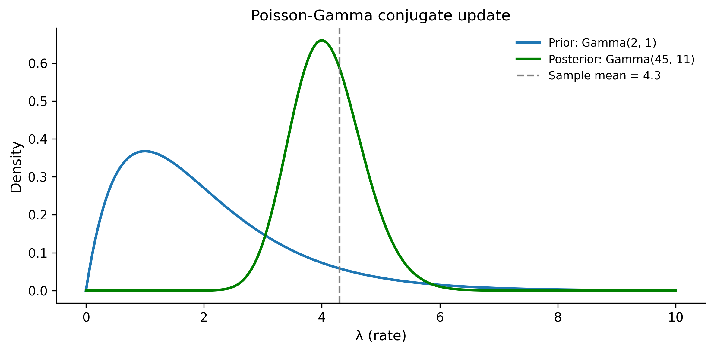
Conjugate priors in practice: baseball strikeout rates
Chris Fonnesbeck uses a baseball example to illustrate how conjugate priors encode real domain knowledge. Suppose you want to estimate a pitcher’s strikeout rate. With a Beta-Binomial model, you can work backward from what you know about the position: a power pitcher might have a prior of Beta(8, 3) (high strikeout rate expected), while a contact-oriented pitcher might start with Beta(3, 7). The conjugate update then combines this positional knowledge with observed performance. The posterior sits between the prior and the data — if it does not, something is wrong with your model. This “working backward from domain knowledge to inform priors” is a pattern you will use repeatedly.
1.7.2 Why modern Bayesian modeling doesn’t rely on conjugacy
Conjugate priors are mathematically elegant, but they come with severe limitations:
- Limited model flexibility. You’re forced to use specific prior distributions that may not reflect your actual beliefs.
- Simple models only. Conjugacy breaks down for hierarchical models, regression, mixture models, and most interesting real-world problems.
- One trick pony. The moment you add a second layer (e.g., a hyperprior), conjugacy no longer applies.
This is where PyMC shines. It doesn’t care whether your model is conjugate or not. You specify whatever priors and likelihoods make scientific sense, and the MCMC sampler handles the computation. The algorithm that makes this work efficiently is called the No-U-Turn Sampler (NUTS) — a variant of Hamiltonian Monte Carlo that automatically tunes its step size and trajectory length.
The message is: learn conjugate models to build intuition, but use PyMC for real work because it frees you from mathematical convenience constraints.
1.8 Credible Intervals vs Confidence Intervals
This section addresses one of the most persistent confusions in applied statistics. Bayesian credible intervals and frequentist confidence intervals often give similar numerical results, but they answer fundamentally different questions.
1.8.1 The confidence interval (frequentist)
A 95% confidence interval means: “If I repeated this experiment many times and computed a CI each time, 95% of those intervals would contain the true parameter.”
It does not mean: “There’s a 95% probability that the true parameter is in this interval.” Once you’ve computed the interval, the parameter is either in it or it isn’t — there’s no probability about it (from a frequentist perspective).
1.8.2 The credible interval (Bayesian)
A 95% credible interval means: “Given the data and the model, there’s a 95% probability that the parameter is in this interval.”
This is usually what people actually want when they compute a confidence interval. It’s the natural interpretation that frequentist intervals don’t support.
1.8.3 Comparing them in code
# Generate data from a known distribution
rng = np.random.default_rng(42)
true_mu = 5.0
true_sigma = 2.0
n_samples = 30
data = rng.normal(loc=true_mu, scale=true_sigma, size=n_samples)
print(f"True μ = {true_mu}")
print(f"Sample mean = {data.mean():.3f}")
print(f"Sample size = {n_samples}")True μ = 5.0
Sample mean = 5.034
Sample size = 30# Frequentist: 95% confidence interval using t-distribution
from scipy.stats import sem
ci_low, ci_high = stats.t.interval(
confidence=0.95,
df=n_samples - 1,
loc=data.mean(),
scale=sem(data),
)
print(f"95% Confidence Interval: ({ci_low:.3f}, {ci_high:.3f})")95% Confidence Interval: (4.454, 5.614)# Bayesian: 95% credible interval using PyMC
with pm.Model() as normal_model:
# Weakly informative priors
mu = pm.Normal("mu", mu=0, sigma=20)
sigma = pm.HalfNormal("sigma", sigma=10)
# Likelihood
obs = pm.Normal("obs", mu=mu, sigma=sigma, observed=data)
# Sample
trace_normal = pm.sample(
draws=2000,
tune=1000,
random_seed=42,
progressbar=False,
)
# 95% HDI (Highest Density Interval)
hdi = az.hdi(trace_normal, var_names=["mu"], hdi_prob=0.95)
hdi_low = hdi["mu"].values[0]
hdi_high = hdi["mu"].values[1]
print(f"95% Credible Interval (HDI): ({hdi_low:.3f}, {hdi_high:.3f})")95% Credible Interval (HDI): (4.465, 5.640)# Visualize both intervals
fig, ax = plt.subplots(figsize=(8, 4))
mu_samples = trace_normal.posterior["mu"].values.flatten()
ax.hist(mu_samples, bins=40, density=True, alpha=0.5, label="Posterior of μ")
# Mark intervals
ax.axvline(x=ci_low, color="blue", linestyle="--", linewidth=2)
ax.axvline(x=ci_high, color="blue", linestyle="--", linewidth=2, label="95% CI")
ax.axvline(x=hdi_low, color="red", linestyle="-", linewidth=2)
ax.axvline(x=hdi_high, color="red", linestyle="-", linewidth=2, label="95% HDI")
ax.axvline(x=true_mu, color="black", linestyle=":", linewidth=2, label=f"True μ = {true_mu}")
ax.set_xlabel("μ")
ax.set_ylabel("Density")
ax.set_title("Confidence interval vs credible interval")
ax.legend()
plt.tight_layout()
plt.show()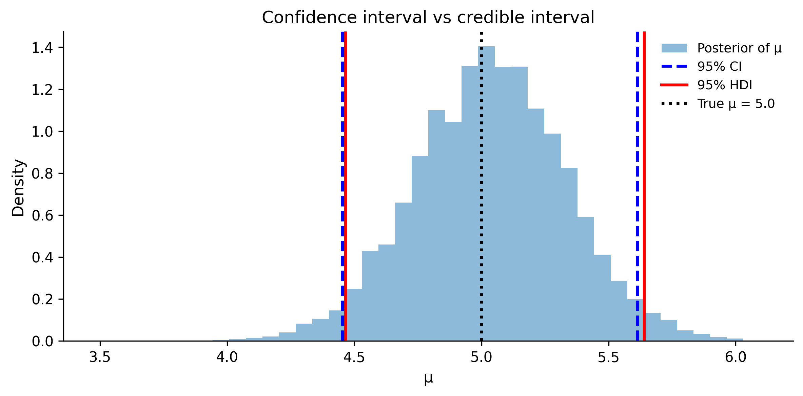
In this case, the two intervals are nearly identical. That’s common when you use weakly informative priors and have enough data. The difference is in interpretation:
- The CI says: “In repeated experiments, 95% of such intervals cover the true μ.”
- The HDI says: “Given this data, there’s a 95% probability μ is between these values.”
The Bayesian interpretation is more intuitive and more directly useful for decision-making. When your boss asks “what’s the chance the effect is positive?”, only the Bayesian framework gives you a direct answer.
1.9 Exercises
1.9.1 Exercise 1: Updating beliefs with more data
A website’s sign-up page has an unknown conversion rate \(\theta\). You start with a weakly informative prior: Beta(1, 1). After day 1, you observe 3 sign-ups out of 50 visitors. After day 2, you observe 5 more sign-ups out of 60 more visitors (110 total visitors, 8 total sign-ups across both days).
Tasks:
- Compute the posterior after day 1 analytically.
- Use the day 1 posterior as the prior for day 2. Compute the final posterior.
- Verify that updating sequentially gives the same result as updating all at once (using all 110 visitors at once).
- Plot all three distributions (prior, after day 1, after day 2) on the same axes.
Solution
# (a) Posterior after day 1
alpha_0, beta_0 = 1, 1 # Prior: Beta(1, 1)
y1, n1 = 3, 50 # Day 1 data
alpha_1 = alpha_0 + y1 # 1 + 3 = 4
beta_1 = beta_0 + n1 - y1 # 1 + 47 = 48
print(f"After day 1: Beta({alpha_1}, {beta_1})")
print(f" Mean: {alpha_1 / (alpha_1 + beta_1):.4f}")
# (b) Use day 1 posterior as day 2 prior
y2, n2 = 5, 60 # Day 2 data
alpha_2 = alpha_1 + y2 # 4 + 5 = 9
beta_2 = beta_1 + n2 - y2 # 48 + 55 = 103
print(f"\nAfter day 2 (sequential): Beta({alpha_2}, {beta_2})")
print(f" Mean: {alpha_2 / (alpha_2 + beta_2):.4f}")
# (c) All-at-once update
y_total = y1 + y2 # 8
n_total = n1 + n2 # 110
alpha_all = alpha_0 + y_total # 1 + 8 = 9
beta_all = beta_0 + n_total - y_total # 1 + 102 = 103
print(f"\nAll at once: Beta({alpha_all}, {beta_all})")
print(f" Same result: {alpha_2 == alpha_all and beta_2 == beta_all}")
# (d) Plot
theta = np.linspace(0, 0.3, 300)
fig, ax = plt.subplots(figsize=(8, 4))
ax.plot(theta, stats.beta(alpha_0, beta_0).pdf(theta), linewidth=2, label="Prior: Beta(1,1)")
ax.plot(theta, stats.beta(alpha_1, beta_1).pdf(theta), linewidth=2, label=f"After day 1: Beta({alpha_1},{beta_1})")
ax.plot(theta, stats.beta(alpha_2, beta_2).pdf(theta), linewidth=2, label=f"After day 2: Beta({alpha_2},{beta_2})")
ax.set_xlabel("θ (conversion rate)")
ax.set_ylabel("Density")
ax.set_title("Sequential Bayesian updating")
ax.legend()
plt.tight_layout()
plt.show()After day 1: Beta(4, 48)
Mean: 0.0769
After day 2 (sequential): Beta(9, 103)
Mean: 0.0804
All at once: Beta(9, 103)
Same result: True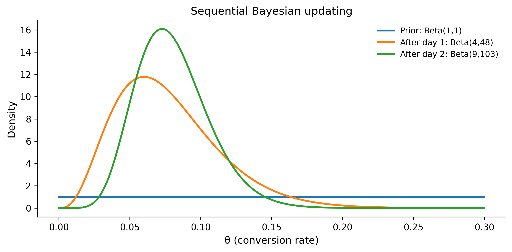
The key insight: Bayesian updating is order-independent. Whether you process data day-by-day or all at once, you get the same posterior. This is a fundamental property of Bayes’ theorem.
1.9.2 Exercise 2: Prior sensitivity
You’re estimating the success rate of a new medical treatment. In a trial, 8 out of 20 patients improved.
Tasks:
- Compute the posterior under three priors: Beta(1,1), Beta(5,5), and Beta(2,8).
- For each posterior, compute the 95% HDI and P(θ > 0.5).
- Which prior would you choose if prior studies suggested a 20% success rate? Why?
Solution
y, n = 8, 20
priors = [
(1, 1, "Flat: Beta(1,1)"),
(5, 5, "Weakly informative: Beta(5,5)"),
(2, 8, "Pessimistic: Beta(2,8)"),
]
fig, ax = plt.subplots(figsize=(8, 4))
theta = np.linspace(0, 1, 300)
for alpha_p, beta_p, label in priors:
alpha_post = alpha_p + y
beta_post = beta_p + (n - y)
post = stats.beta(alpha_post, beta_post)
# 95% HDI (equal-tailed for simplicity)
hdi_low = post.ppf(0.025)
hdi_high = post.ppf(0.975)
prob_above_half = 1 - post.cdf(0.5)
print(f"{label}")
print(f" Posterior: Beta({alpha_post}, {beta_post})")
print(f" Mean: {post.mean():.3f}")
print(f" 95% CI: ({hdi_low:.3f}, {hdi_high:.3f})")
print(f" P(θ > 0.5): {prob_above_half:.3f}")
print()
ax.plot(theta, post.pdf(theta), linewidth=2, label=label)
ax.axvline(x=0.5, color="gray", linestyle="--", alpha=0.5)
ax.set_xlabel("θ (success rate)")
ax.set_ylabel("Posterior density")
ax.set_title("Prior sensitivity analysis")
ax.legend()
plt.tight_layout()
plt.show()Flat: Beta(1,1)
Posterior: Beta(9, 13)
Mean: 0.409
95% CI: (0.218, 0.616)
P(θ > 0.5): 0.192
Weakly informative: Beta(5,5)
Posterior: Beta(13, 17)
Mean: 0.433
95% CI: (0.264, 0.611)
P(θ > 0.5): 0.229
Pessimistic: Beta(2,8)
Posterior: Beta(10, 20)
Mean: 0.333
95% CI: (0.179, 0.508)
P(θ > 0.5): 0.031
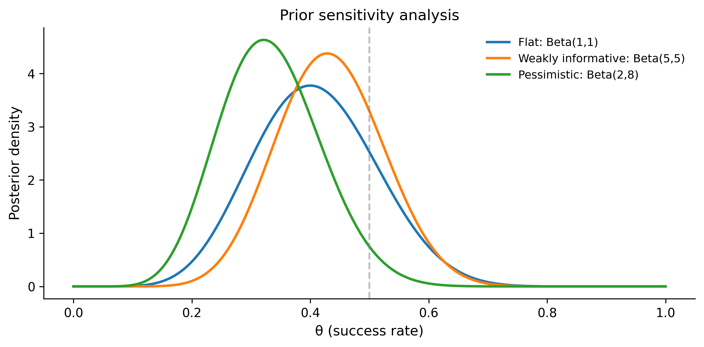
Answer to (c): If prior studies suggest a 20% success rate, the Beta(2, 8) prior is most appropriate. Its mean is \(2/(2+8) = 0.20\), encoding the belief that the treatment probably has a low success rate. This is an informative prior grounded in actual evidence, not an arbitrary choice. The resulting posterior is more conservative — it takes more data to convince you the treatment works well.
1.9.3 Exercise 3: Building a PyMC model from scratch
A factory produces light bulbs. You measure the lifetime (in hours) of 15 bulbs:
[1050, 1100, 980, 1200, 1150, 1020, 1080, 1175, 990, 1050, 1100, 1025, 1090, 1140, 1060]Build a PyMC model assuming lifetimes are normally distributed. Use priors:
- μ ~ Normal(1000, 200)
- σ ~ HalfNormal(100)
Report the posterior mean and 95% HDI for both μ and σ.
Solution
lifetimes = np.array([
1050, 1100, 980, 1200, 1150,
1020, 1080, 1175, 990, 1050,
1100, 1025, 1090, 1140, 1060,
])
with pm.Model() as bulb_model:
# Priors
mu = pm.Normal("mu", mu=1000, sigma=200)
sigma = pm.HalfNormal("sigma", sigma=100)
# Likelihood
obs = pm.Normal("obs", mu=mu, sigma=sigma, observed=lifetimes)
# Sample
trace_bulbs = pm.sample(
draws=2000,
tune=1000,
random_seed=42,
progressbar=False,
)
# Results
print(az.summary(trace_bulbs, var_names=["mu", "sigma"], hdi_prob=0.95)) mean sd hdi_2.5% hdi_97.5% mcse_mean mcse_sd ess_bulk \
mu 1079.827 18.387 1040.421 1114.081 0.226 0.252 6650.0
sigma 70.271 14.220 46.192 98.888 0.201 0.205 5246.0
ess_tail r_hat
mu 5042.0 1.0
sigma 4801.0 1.0 # Visualize posteriors
az.plot_posterior(trace_bulbs, var_names=["mu", "sigma"], hdi_prob=0.95)
plt.tight_layout()
plt.show()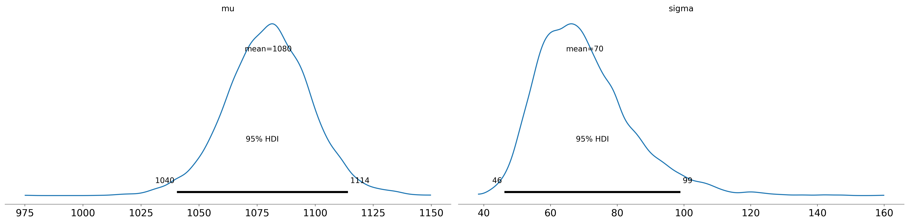
The posterior for μ should be centered near the sample mean (≈1083 hours), and σ near the sample standard deviation (≈63 hours). The priors are weakly informative enough that the data dominate.
1.9.4 Exercise 4: Bayesian A/B testing
Two versions of an ad are shown to users. Ad A gets 45 clicks out of 500 impressions. Ad B gets 60 clicks out of 500 impressions. Use PyMC to answer: “What’s the probability that Ad B has a higher click-through rate than Ad A?”
Solution
# Data
clicks_a, impressions_a = 45, 500
clicks_b, impressions_b = 60, 500
with pm.Model() as ab_model:
# Independent priors for each ad's click rate
theta_a = pm.Beta("theta_a", alpha=1, beta=1)
theta_b = pm.Beta("theta_b", alpha=1, beta=1)
# Likelihoods
obs_a = pm.Binomial("obs_a", n=impressions_a, p=theta_a, observed=clicks_a)
obs_b = pm.Binomial("obs_b", n=impressions_b, p=theta_b, observed=clicks_b)
# Derived quantity: difference
diff = pm.Deterministic("diff", theta_b - theta_a)
# Sample
trace_ab = pm.sample(
draws=3000,
tune=1000,
random_seed=42,
progressbar=False,
)
# P(B > A)
diff_samples = trace_ab.posterior["diff"].values.flatten()
prob_b_better = (diff_samples > 0).mean()
print(f"P(Ad B > Ad A) = {prob_b_better:.3f}")
print(f"Expected lift: {diff_samples.mean() * 100:.2f} percentage points")P(Ad B > Ad A) = 0.939
Expected lift: 3.01 percentage points# Visualize the difference
fig, ax = plt.subplots(figsize=(8, 4))
ax.hist(diff_samples * 100, bins=50, density=True, alpha=0.6)
ax.axvline(x=0, color="red", linestyle="--", linewidth=2, label="No difference")
ax.set_xlabel("θ_B − θ_A (percentage points)")
ax.set_ylabel("Density")
ax.set_title(f"Posterior of lift: P(B > A) = {prob_b_better:.1%}")
ax.legend()
plt.tight_layout()
plt.show()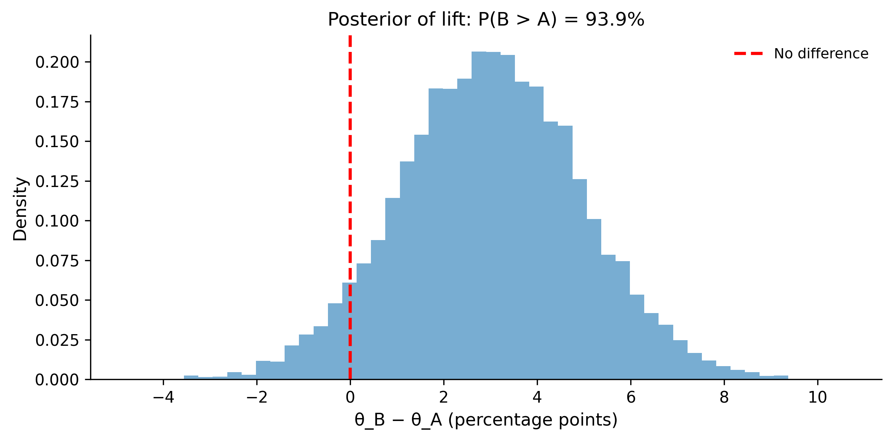
The posterior probability that Ad B has a higher CTR is about 93-95%. This gives you a direct, actionable answer: “There’s roughly a 94% chance that Ad B is better.” No p-value gymnastics needed.
Note how this differs from a frequentist approach: a two-proportion z-test might give you a p-value of ~0.09, leading to “not significant at α = 0.05” — even though you’re quite confident B is better. The Bayesian approach avoids this all-or-nothing binary.